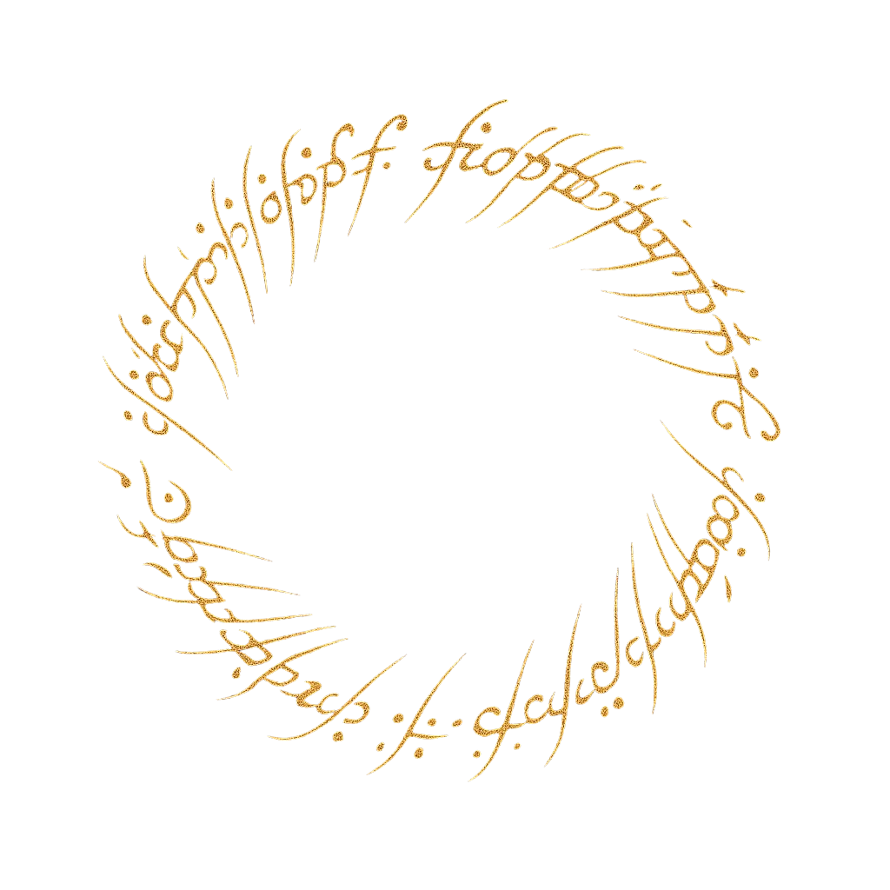

Portfolio
Adrien Cachoux

A Propos
Projets
Compétences
CV
Contact
Je suis étudiant en deuxième année de BTS SIO (Services Informatiques aux Organisations), spécialité SLAM (Solutions logiciel et application métier).
J'ai toujours eu une attirance pour l'informatique et plus spécialement dans le développement informatique. C'est tout naturellement que je me suis tourné vers cette formation, après avoir obtenu mon BAC Général spécialité mathématique et physique chimie en 2021 et après 2ans en licences Mathématique et informatique appliqué aux sciences humaines et sociales.
Professionnellement je souhaite m'orienter vers le métier de développeur web.
Après l'obtention de mon BTS SIO - BAC+2, je souhaiterais poursuivre mon cursus en suivant une formation en BACHELOR - BAC+3 ou d'une licence professionnel dans le domaine du développement informatique, puis par la suite mon objectif est de continuer vers une formation en master-BAC+5.
Je souhaite continuer ma formation par le biais de l'apprentissage en alternance, ce qui me permettra :
Institut Limayrac
Aix Marseille université
Lycée Vincent auriol
Collège François Mitterrand
Stage BTS SIO de 2ème année.
Stage suivi dans l'entreprise Gaches Chimie au sein du service informatique.
Stage BTS SIO de 1ère année.
Stage suivi dans l'entreprise MOBIX au sein du service production informatique.
Gaches Chimie, Escalquens
Chirurgien-dentiste, Caraman
Institut de recherche Pierre Fabre Médicaments, Castres
Conception et développement d'un site web informatif dédié au rugby à 15, offrant une plateforme complète pour les passionnés de ce sport. Le site intègre des fonctionnalités permettant aux utilisateurs d'accéder aux actualités du club, au calendrier des matchs, et aux statistiques des joueurs. Développé avec HTML5, CSS3 et JavaScript pour garantir une expérience utilisateur optimale sur tous les appareils.
Développement d'une plateforme interactive de questions-réponses centrée sur les différentes ligues sportives. Cette application web sécurisée intègre un système d'authentification personnalisé, permettant aux utilisateurs de créer un compte et d'accéder à un contenu personnalisé. Utilisation de PHP et MySQL pour la gestion des données utilisateurs et implémentation d'un algorithme de filtrage pour afficher des questions pertinentes basées sur les centres d'intérêt de l'utilisateur.
Site web (Front-end) : Développement d'une plateforme web responsive pour un restaurant italien permettant la découverte du menu, les réservations et commandes en ligne. Interface intuitive développée avec HTML5, CSS3, PHP et JavaScript intégrant un système d'authentification sécurisé.
Application de gestion (Back-end) : Conception d'une application Java client lourd pour la gestion des commandes, stocks et personnel. Communication en temps réel avec le site web et génération de rapports analytiques pour optimiser les performances du restaurant.
Développement d'un outil d'analyse prédictive permettant d'optimiser la gestion des ressources humaines. Cette solution calcule automatiquement la charge de travail additionnelle par collaborateur en fonction des contrats en cours, en intégrant des métriques de performance individuelles. L'application génère des visualisations dynamiques facilitant la prise de décision pour les gestionnaires de projets et contribuant à une meilleure allocation des ressources humaines.
Conception et implémentation d'un tableau de bord analytique permettant la visualisation en temps réel de l'état d'avancement des projets. Cet outil utilise des histogrammes interactifs pour représenter le temps passé, les tâches accomplies, les délais prévus et les retards potentiels. Développé avec des bibliothèques de visualisation de données modernes, cette solution améliore significativement la capacité de l'équipe à identifier et résoudre les goulots d'étranglement dans la gestion de projets.
Création d'un système d'analyse financière hebdomadaire visualisant les variations de marges sur l'ensemble du portefeuille de projets. Cette solution intègre des données historiques pour établir des comparaisons pertinentes et identifier les tendances. L'outil permet aux décideurs d'ajuster rapidement leur stratégie commerciale en fonction des performances financières des projets et contribue à l'optimisation continue de la rentabilité.
Développement d'une interface de suivi financier permettant d'identifier instantanément les contrats signés n'ayant pas encore généré de paiements. Ce tableau de bord intuitif facilite le travail du service comptable en centralisant les informations critiques et en priorisant les actions de recouvrement. L'outil a permis d'améliorer significativement le suivi des créances et d'optimiser la gestion de la trésorerie de l'entreprise.
Conception d'un système d'analyse de performance comparant les heures effectives de production par collaborateur aux objectifs préétablis. Cette solution offre une visibilité précise sur l'allocation du temps de travail et permet d'identifier rapidement les écarts de productivité. Grâce à des indicateurs visuels personnalisables, les responsables d'équipe peuvent désormais optimiser la répartition des tâches et améliorer l'efficacité globale des ressources humaines.
Développement d'une solution d'automatisation pour la gestion financière sur Zoho Books, permettant la mise à jour dynamique des échéances de paiement en fonction des modalités contractuelles. Cette intégration optimise le processus de facturation récurrente et réduit considérablement le risque d'erreurs humaines. L'outil assure une gestion proactive des flux de trésorerie et améliore la précision des prévisions financières de l'entreprise.
Implémentation d'une fonctionnalité avancée pour Zoho CRM permettant la gestion intelligente des dates de création des devis. Cette solution intègre un système de validation qui préserve l'intégrité des données historiques tout en autorisant des modifications contrôlées. L'automatisation de ce processus a significativement amélioré la traçabilité des devis et renforcé la fiabilité du système d'information commercial de l'entreprise.
| Projets | Gérer le patrimoine informatique | Répondre aux incidents et aux demandes d'assistance et d'évolution | Développer la présence en ligne de l'organisation | Travailler en mode projet | Mettre à disposition des utilisateurs un service informatique | Organiser son développement professionnel |
|---|---|---|---|---|---|---|
| Réalisation en cours de formation | ||||||
| LinkedIn,CV | ✕ | ✕ | ✕ | ✕ | ✕ | ✓ |
| CazaFamilia - Système de gestion de restaurant italien | ✕ | ✓ | ✓ | ✓ | ✓ | ✕ |
| Site web M2L | ✕ | ✕ | ✕ | ✓ | ✓ | ✓ |
| AP GLPI | ✓ | ✕ | ✕ | ✕ | ✕ | ✕ |
| Planification d'un projet via l'outil Trello | ✕ | ✕ | ✕ | ✕ | ✓ | ✕ |
| Portfolio | ✕ | ✕ | ✕ | ✕ | ✕ | ✓ |
| Machines virtuelles Windows, Windows Server et Linux | ✕ | ✓ | ✕ | ✕ | ✓ | ✕ |
| Site web d'FAQ | ✕ | ✓ | ✓ | ✓ | ✓ | ✕ |
| Réalisations en milieu professionnel en cours de première année | ||||||
| Tableau prévisionnel de la charge de travail à prévoir en plus par collaborateur | ✕ | ✓ | ✕ | ✓ | ✓ | ✕ |
| Indicateur de retard de tous les projets ouverts | ✕ | ✓ | ✕ | ✓ | ✓ | ✕ |
| Variation des marges des projets | ✕ | ✓ | ✕ | ✓ | ✓ | ✕ |
| Contrats sans paiements effectués | ✕ | ✓ | ✕ | ✓ | ✓ | ✕ |
| Tableau des temps effectués par collaborateur en fonction des objectifs initiaux | ✕ | ✓ | ✕ | ✓ | ✓ | ✕ |
| Actualisation de la date de paiement des contrats payés mensuellement | ✕ | ✓ | ✕ | ✓ | ✓ | ✕ |
| Modification fiche devis client en fonction des dates | ✕ | ✓ | ✕ | ✓ | ✓ | ✕ |
| Réalisations en milieu professionnel en cours de seconde année | ||||||
| Workflow sur la phase de recrutement | ✓ | ✓ | ✕ | ✓ | ✓ | ✓ |
| Workflow sur la phase de départ | ✓ | ✓ | ✕ | ✓ | ✓ | ✓ |